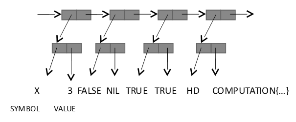
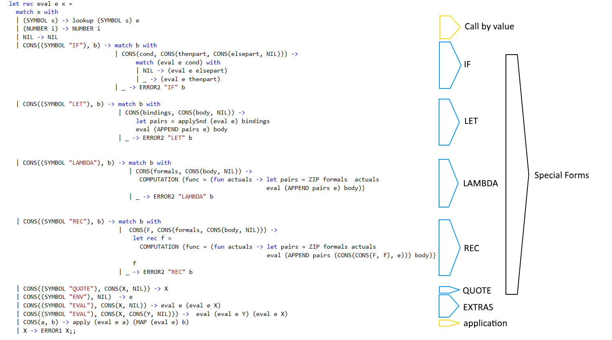

Functional Programming in F#
Part III — Interpreters
Steven Gilham
Based on material developed in collaboration with Will Harwood and Laurence Jordan and presented in 2008

|
Course Overview
|
Interpreters
A LISP evaluator
A LISP evaluator
A simple language
Expr =
// Special Forms
(LET list_of_dotted_pairs EXPR) |
(IF EXPR EXPR EXPR) |
(LAMBDA list_of_variables EXPR) |
(REC variable list_of_variables EXPR) |
(QUOTE EXPR) |
(EVAL EXPR) |
(EVAL EXPR environment_expression) |
|
Examples |
// Call by Value
(EXPR EXPR*) |
SYMBOL |
NUMBER
|
|
list_of_dotted_pairs = ((EXPR . EXPR)*) list_of_variables = ( SYMBOL*) variable = SYMBOL environment_expression = EXPR |
Built-in Functions
TRUE
FALSE
HD
TL
CONS
ADD
MULT
SUB
DIVNULL
ATOMP
SYMBOLP
NUMBERP
LISTP
ZEROP
EQUAL
Structure of the Evaluator
to eval an expression e in an environment env = if e is NIL then NIL else if e is a number n then n e is a SYMBOL then look it up in the environment else if e is a special form then evaluate special form else if e is of the form (expr1 expr2 … exprN) then (eval expr1 env) (eval expr2 env) … (eval exprN env) else ERROR
Structure of the Environment
We extend the algebraic type we used last time with the notion of a
function in the form of the COMP type; and simplify the value of a SYMBOL to be a string.
type [<StructuralEquality;NoComparison>] SEXPR = SYMBOL of string
| NUMBER of int | NIL
| CONS of (SEXPR * SEXPR)
| COMPUTATION of COMP
and [<ReferenceEquality;NoComparison>] COMP = { func : SEXPR -> SEXPR } ;;The environment is a SEXPR which is a list of SYMBOL * SEXPR pairs
Concept
"and" collects mutually recursive definitions into one
We need to instruct the compiler how to determine whether two SEXPR values are the same, because there is no natural equality on function values.
StructuralEquality means things are identical if their types and members are
ReferenceEquality means things are identical only if they refer to the same entity.
NoComparison means there is no ordering (less than/greater than) of items.
The value of a COMP type is a record, a series of named fields gathered together.
In this case there is one field, and that has a value that is a function mapping one SEXPR to another.
Representation
Call-by-value forms
eval (SYMBOL s) env = lookup (SYMBOL s) env
| (SYMBOL s) -> lookup (SYMBOL s) eeval (NUMBER i) env = NUMBER i
| (NUMBER i) -> (NUMBER i)eval NIL env = NIL
|NIL -> NILeval CONS(E,Rest) env = (eval E env) (MAP (evalin env) Rest)
|CONS(a,b) -> apply (eval e a) (MAP (eval e) b)Default environment is a list of SYMBOL * COMPUTATION pairs defining the built-ins
In code, eval is environment -> SEXPR -> SEXPR rather than SEXPR -> environment -> SEXPR
Special form QUOTE
eval (QUOTE E) env = E
|CONS((SYMBOL "QUOTE"),CONS(X,NIL)) -> XSimply unpacks what is quoted
Special form IF
NIL is the only "falsy" value; everything else is "truthy"
eval (IF E1 E2 E3) env = if (eval E1 env) then (eval E2 env) else (eval E3 env)
|CONS((SYMBOL "IF"), b) -> match b with
| CONS(cond, CONS(thenpart,CONS(elsepart,NIL))) ->
if (eval e cond) = NIL
then (eval e elsepart)
else (eval e thenpart)
| _ -> ERROR2 "IF" b)Error if there are not the right number of elements in the expression
Special form LET
eval (LET BINDINGS E) env =
let pairs = applySnd (evalin env) BINDINGS
in eval E (APPEND pairs env) where evalin env E = eval E env
Having made a binding, we have augmented our environment for the evaluation of the rest of the expression
applySnd is like map by applies to a list of pairs, and the second element of each pair is mapped
APPEND augments its second argument (here, the environment) with its first (both are lists of SEXPR * SEXPR)
|CONS((SYMBOL "LET"),b) -> match b with
| CONS(bindings, CONS(body, NIL)) ->
let pairs = applySnd (eval e) bindings
eval (APPEND pairs e) body
| _ -> ERROR2 "LET" bSpecial form LAMBDA
eval (LAMBDA FORMALS E) env =
fun actuals -> let pairs = ZIP FORMALS actuals
in eval E (APPEND pairs env)
Having made a binding of argument to argument name, we have augmented our environment for the evaluation of the rest of the expression
ZIP takes a pair of lists and makes a list of pairs
|CONS((SYMBOL "LAMBDA"),b) -> match b with
| CONS(formals, CONS(body, NIL)) ->
COMPUTATION {func = (fun actuals -> let pairs = ZIP formals actuals
eval (APPEND pairs e) body)}
| _ -> ERROR2 "LAMBDA" bSpecial form REC
Recursive Named function — needs a name so it can refer to itself
eval (REC NAME FORMALS E) env =
let rec f = fun actuals -> let pairs = ZIP FORMALS actuals
in eval E (APPEND pairs (CONS(CONS(NAME,f), env))
in f
We augment our environment with the function name (pointing to the self-referencing function) for the evaluation of the rest of the expression
|CONS((SYMBOL “REC"),b) -> match b with
| CONS(F, CONS(formals, CONS(body, NIL))) ->
let rec f = COMPUTATION {func = (fun actuals -> let pairs = ZIP formals actuals
eval (APPEND pairs (CONS(CONS(F, f), e))) body)}
| _ -> ERROR2 “REC" bExtras — code is data is code
Get the environment : eval (ENV) env = env
|CONS((SYMBOL "ENV"), NIL) -> eEvaluating an expression in the current environment : eval (EVAL E) env = eval (eval E e) env
|CONS((SYMBOL "EVAL"), CONS(X,NIL)) -> eval e (eval e X)Evaluating an expression in a new environment :eval (EVAL E ENV) env = eval (eval E env) (eval ENV env)
|CONS((SYMBOL "EVAL"), CONS(X,CONS(Y,NIL))) -> eval (eval NIL Y) (eval NIL X)Note use of pattern matching to distinguish the shape of the argument list (number of arguments)
Remaining cases
Function application is modelled by taking a fully evaluated list, whose first element is expected to be a computation and applying it to the remainder of the list of arguments.
|CONS(a, b) -> apply (eval e a) (MAP (eval e) b)Built-in functions are represented in this model by providing a standard environment with computations defined.
Anything else that is superficially syntactically valid but matches none of the expected forms results in an error.
All the missing pieces are in the linked source file.
Representation
Exercise 3.1
Modify the parser from last time to work with the new definition of SEXPR
Add Boolean operators AND, OR, NOT, EQUIV, IMPLIES to evaluator
Add built in functions to map between SYMBOLS and List of Characters and back again.
Add QUASIQUOTE (QQ), UNQUOTE with the meaning that (QQ (ADD (UNQUOTE X) (UNQUOTE Y) 23)) in an environment where X and Y are 123 and Z respectively evaluates to the SEXPR (ADD 123 Z 23).
(Advanced) Change the evaluator to allow deal with interpreted code in the environment e.g. F is bound to (INTERPRET E) in env and (F X) is: (eval E env)(eval X env). Alternatively extend the type of SEXPR to include an INTERPRETED constructor and do the same.
(Advanced) Change the evaluator to allow special forms to be placed in the environment.